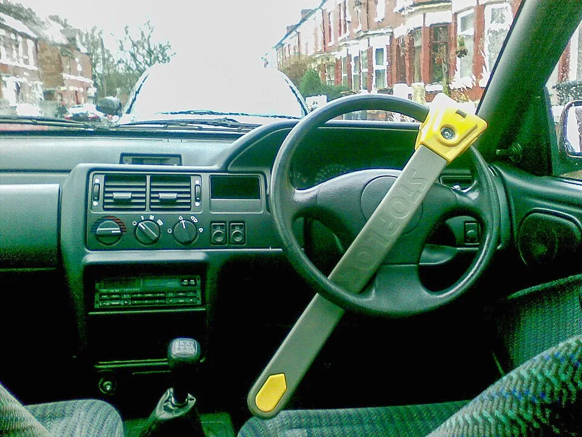
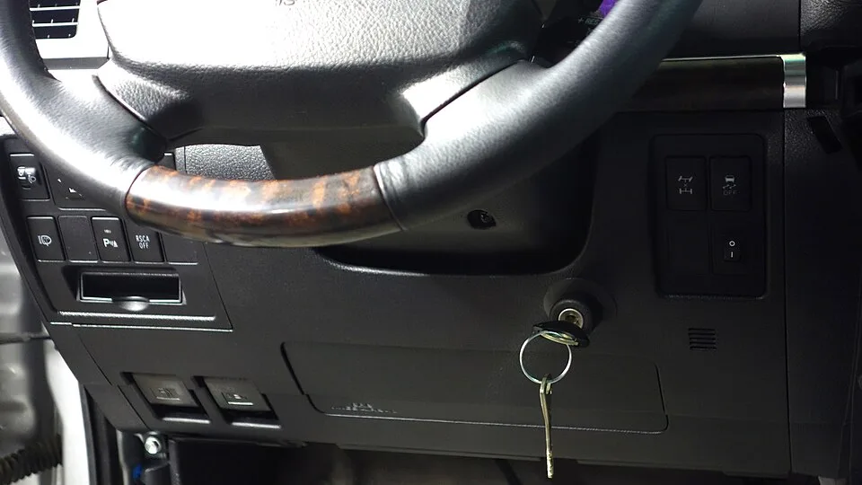
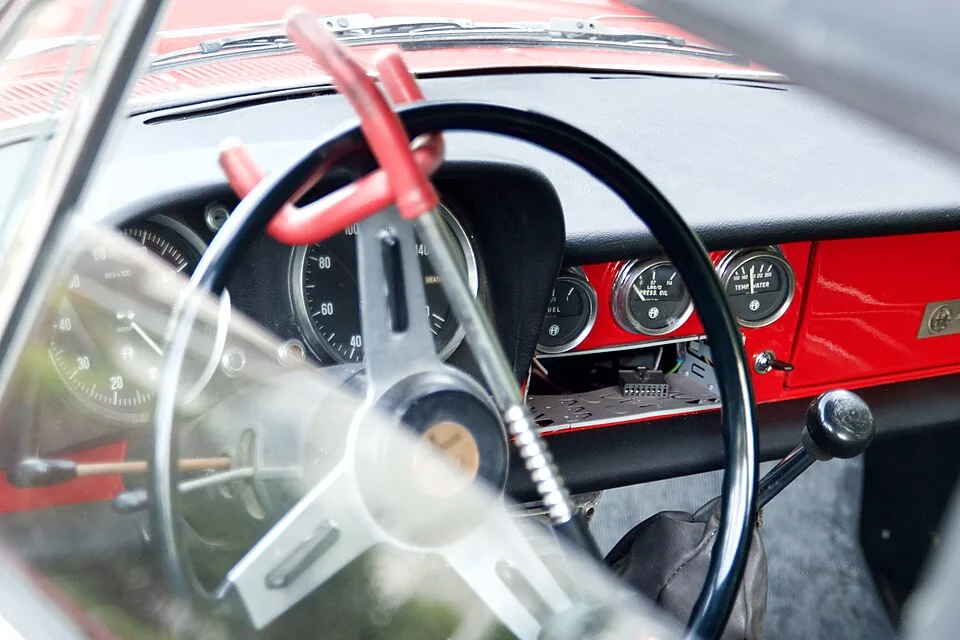
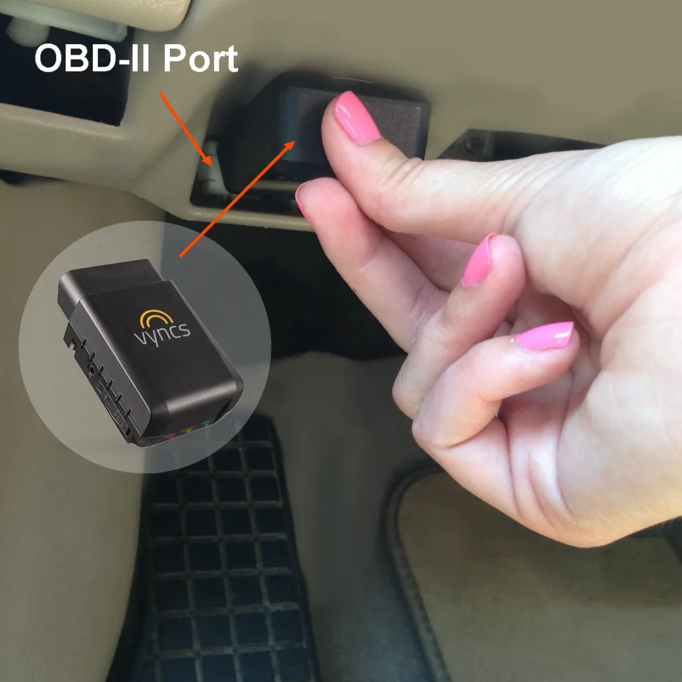
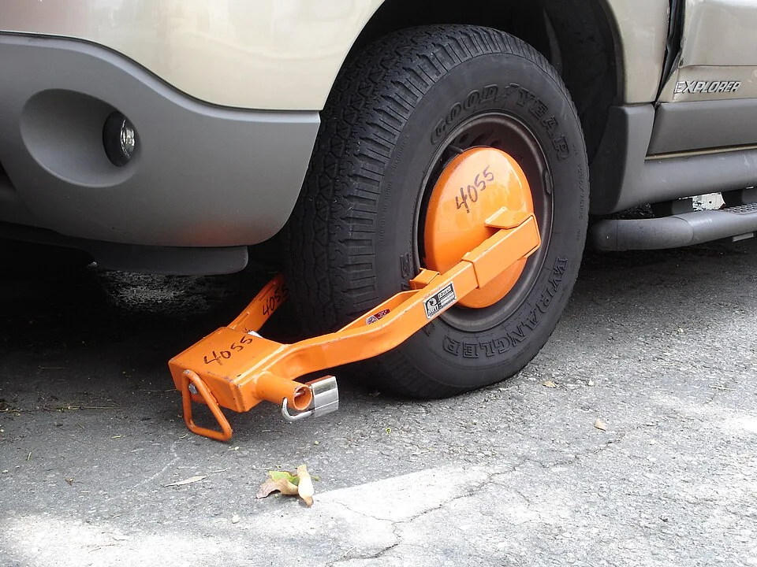

▲ 스티어링락은 지금도 가장 저렴하고 눈에 띄는 물리적 도난방지 장치다 ⓒ Wikimedia Commons
요즘 신차에는 대부분 이모빌라이저가 기본 탑재돼 있다. 정품 키가 없으면 시동 자체가 걸리지 않으니, 굳이 핸들에 쇠막대를 걸어 잠그는 스티어링락 같은 구식 장비가 필요할까 싶다.
하지만 이모빌라이저도, 스마트키도 뚫리는 시대다. 미국에서는 이모빌라이저가 없는 구형 현대·기아차를 노린 이른바 '기아 보이즈' 절도 놀이가 확산됐고, 국내에도 이모빌라이저 미장착 차량이 여전히 수백만 대 남아 있다. 전자식 장치 하나만 믿고 있어도 되는지, 물리적 도난방지 장치의 실효성을 다시 짚어봤다.
1. 이모빌라이저, 원리는 확실한데 보급률은 100%가 아니다
이모빌라이저(Immobilizer)는 키와 차량이 암호를 주고받아 일치할 때만 시동이 걸리도록 하는 전자식 장치다. 키를 꽂거나 스마트키가 인식되면 차량 컴퓨터가 무선 신호를 보내고, 키 내부의 트랜스폰더 칩이 고유 신호로 응답한다. 이 값이 일치하지 않으면 연료 분사나 점화 계통이 작동하지 않아 억지로 시동을 걸어도 차가 움직이지 않는다.
문제는 이 기술이 모든 차에 적용돼 있지는 않다는 점이다. 국내 보도에 따르면 최근 10년간 국내에서 운행용으로 팔린 현대·기아차 총 1147만 대 가운데 이모빌라이저를 장착하지 않은 차량이 272만 대에 달한다. 미국에서는 이 공백을 노린 절도가 SNS를 타고 '기아 보이즈(Kia Boyz)'라는 이름으로 확산되기도 했다.
📍 '기아 보이즈' 사태가 보여준 것
미국에서는 이모빌라이저가 탑재되지 않은 2021년 11월 이전 생산 현대·기아 차종이 절도 표적이 됐다. 나사돌리개와 USB 케이블만으로 시동을 거는 방법이 SNS에 퍼지면서 도난이 급증했고, 현대차·기아는 도난방지 소프트웨어 업그레이드와 함께 12개 주에 총 2만6000여 개의 스티어링 휠 잠금장치를 무상 배포했다. 소프트웨어 업그레이드를 받은 차량은 그렇지 않은 동일 모델 대비 도난 빈도가 64% 감소한 것으로 분석됐다. 결국 전자식 보안의 공백을 메운 것은 다름 아닌 물리적 잠금장치였다.

▲ 이모빌라이저는 키와 차량이 암호를 주고받아야 시동이 걸리는 구조지만, 모든 차량에 탑재된 것은 아니다 ⓒ Wikimedia Commons
2. 그런데도 뚫린다 — 릴레이 어택과 CAN 인젝션
이모빌라이저와 스마트키가 있어도 절대 안전하지는 않다. 최근 몇 년 사이 등장한 신종 수법들은 전자식 보안 자체를 우회하는 방식으로 진화했다.
| 수법 | 원리 |
|---|---|
| 릴레이 어택 | 실내에 있는 스마트키의 미약한 전파를 중계 장비로 증폭해, 차량이 '키가 가까이 있다'고 착각하게 만들어 문을 열고 시동을 거는 수법. 훌라후프에 전선을 감아 안테나로 쓴 사례까지 보고됨 |
| CAN 인젝션 | 헤드라이트 배선 등 차량 외부에서 접근하기 쉬운 지점을 통해 CAN(차량 내부 통신망)에 침투, ECU에 가짜 신호를 보내 정상 키로 인식시키는 수법. 블루투스 스피커로 위장한 해킹 장비가 다크웹에서 유통된 사례도 확인됨 |
| 이모빌라이저 미장착 구형 모델 겨냥 | 애초에 이모빌라이저가 없는 차량은 드라이버와 케이블만으로 시동이 걸리는 취약점을 이용, SNS로 방법이 확산된 사례('기아 보이즈') |
✅ 전자식 보안만으로 부족한 이유
· 릴레이 어택과 CAN 인젝션은 키를 훔치거나 복제하지 않고도 차량을 움직일 수 있게 만듦
· 두 수법 모두 운전자가 눈치채기 어려운 방식으로 짧은 시간에 진행됨
· 신차라고 해서 반드시 안전한 것은 아니며, 제조사별·모델별로 보안 수준 차이가 존재함
· 전자식 보안이 뚫린 뒤에는 물리적으로 차를 움직이지 못하게 하는 장치만이 마지막 저지선 역할을 함
카스퍼스키 등 보안 업계가 경고한 커넥티드카 보안 취약점 관련 보도는 아래에서 확인할 수 있다. 전자신문 관련 기사 바로가기
3. 스티어링락이 여전히 유효한 이유
스티어링락(핸들잠금장치)은 원리가 단순하다. 핸들에 금속 막대를 걸어 잠그면, 설령 시동이 걸려도 핸들을 일정 각도 이상 돌릴 수 없어 차를 몰고 나갈 수 없다. 전자식 보안을 완전히 우회당해도 이 물리적 제약은 그대로 남는다.

▲ 클럽형 스티어링락은 핸들 양쪽 살을 훅으로 감싸 걸리게 하는 구조로, 절단하지 않는 한 핸들 조작 자체가 불가능해진다 ⓒ Wikimedia Commons
📍 절도범 입장에서 본 스티어링락
절도범 입장에서 가장 큰 리스크는 시간이다. 전자식 보안을 우회해 시동을 걸었다 해도, 눈에 보이는 스티어링락이 걸려 있으면 이를 절단하거나 풀어야 하는 추가 작업과 시간이 필요해진다. 실제로 대부분의 차량 절도 범죄는 짧은 시간 안에 조용히 끝내야 성립하기 때문에, 눈에 띄는 물리적 장치 자체가 범행을 단념시키는 심리적 억제 효과를 낸다는 것이 보안 전문가들의 공통된 설명이다. 실제로 현대차·기아가 미국에서 이모빌라이저 미장착 차량에 스티어링 휠 잠금장치를 무상 배포한 것도 같은 논리다.
4. 스티어링락 말고도 있다 — GPS 추적기·타이어락·블랙박스 연동
물리적 도난방지 수단이 스티어링락 하나만은 아니다. 목적에 따라 조합해서 쓰는 것이 현실적이다.

▲ OBD-II 포트에 꽂는 방식의 GPS 추적기는 도난을 막지는 못해도, 도난 이후 차량 위치를 실시간으로 추적해 회수 확률을 높인다 ⓒ Wikimedia Commons
| 장치 | 기능 | 특징 |
|---|---|---|
| 스티어링락 | 핸들 조작 자체를 물리적으로 봉쇄 | 가장 저렴, 설치·해체 간편, 눈에 띄어 억제 효과 큼 |
| 타이어락(휠 클램프) | 바퀴를 통째로 묶어 이동 자체를 봉쇄 | 스티어링락보다 무겁고 설치 번거롭지만 절단 난이도 높음 |
| GPS 추적기 | 실시간 위치 추적, 도난 후 회수 지원 | 도난 자체는 막지 못함, OBD 단자·배터리 내장형 등 다양 |
| 블랙박스 주차모드 연동 | 충격·움직임 감지 시 알림·녹화 | 도난 시도 증거 확보, 스마트폰 알림 연동형이 많아짐 |
| 사이드미러·페달 잠금장치 | 차량 특정 부위 조작 봉쇄 | 보급률 낮지만 스티어링락과 병행 가능 |
✅ 목적별로 골라야 한다
· 도난 자체를 막고 싶다면 — 스티어링락, 타이어락 등 물리적 봉쇄 장치가 우선
· 도난 이후 회수 가능성을 높이고 싶다면 — GPS 추적기가 필수
· 증거를 남기고 싶다면 — 블랙박스 주차모드 상시 녹화 설정 확인
· 이모빌라이저 미장착 구형 차량이라면 스티어링락 등 물리적 장치의 우선순위를 더 높여야 함
5. 실제 구매할 때 체크포인트와 가격대
스티어링락은 국내 오픈마켓·자동차용품점에서 손쉽게 구할 수 있고, 가격 부담도 크지 않다. 다만 저가형 제품 중에는 잠금 강도가 약해 절단에 취약한 경우도 있어 몇 가지는 확인하고 사는 것이 좋다.

▲ 타이어락(휠 클램프)은 바퀴 자체를 묶어버려 스티어링락보다 이동 자체를 원천 봉쇄하는 효과가 크다 ⓒ Wikimedia Commons
⚠️ 스티어링락 구매 전 체크리스트
· 잠금부 소재 — 절단기에 쉽게 잘리지 않는 경화강 소재인지 확인
· 실린더 잠금 방식 — 피킹에 취약한 저가형 텀블러 방식보다는 디스크형·디지털 방식이 상대적으로 안전
· 핸들 규격 호환 — 차량 핸들 지름과 살 개수(3본·4본 등)에 맞는지 확인
· 가격대 — 보급형은 2만~3만 원대, 경화강·디스크락 등 고급형은 5만~10만 원대 수준으로 형성돼 있음
· 병행 사용 — 이모빌라이저 미장착 구형 차량이거나 노상 주차가 잦다면 GPS 추적기와 함께 쓰는 것을 고려
6. 요약
이모빌라이저는 확실히 도난 문턱을 높였지만, 만능은 아니다. 국내에도 이모빌라이저 미장착 차량이 수백만 대 남아 있고, 최신 차량조차 릴레이 어택·CAN 인젝션 같은 신종 수법 앞에서는 완전히 안전하다고 장담하기 어렵다.
스티어링락 등 물리적 장치는 이런 전자식 보안의 공백을 메우는 마지막 저지선 역할을 한다. 실제로 현대차·기아가 이모빌라이저 미장착 차량에 스티어링 휠 잠금장치를 무상 배포하고, 그 결과 도난율이 크게 낮아진 사례가 이를 뒷받침한다.
목적에 맞게 조합하는 것이 현실적인 선택이다. 도난 자체를 막고 싶다면 스티어링락·타이어락을, 도난 이후 회수 가능성을 높이고 싶다면 GPS 추적기를 병행하는 것이 좋다. 특히 이모빌라이저가 없는 구형 차량을 운행 중이라면 물리적 도난방지 장치의 우선순위를 한 단계 높여둘 필요가 있다.